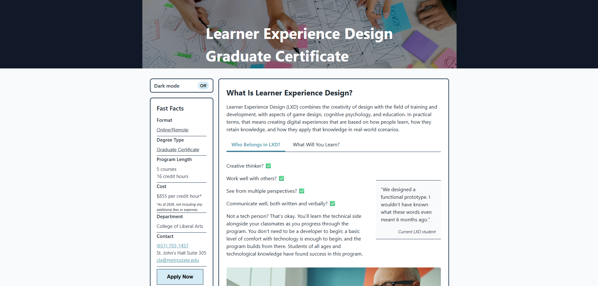
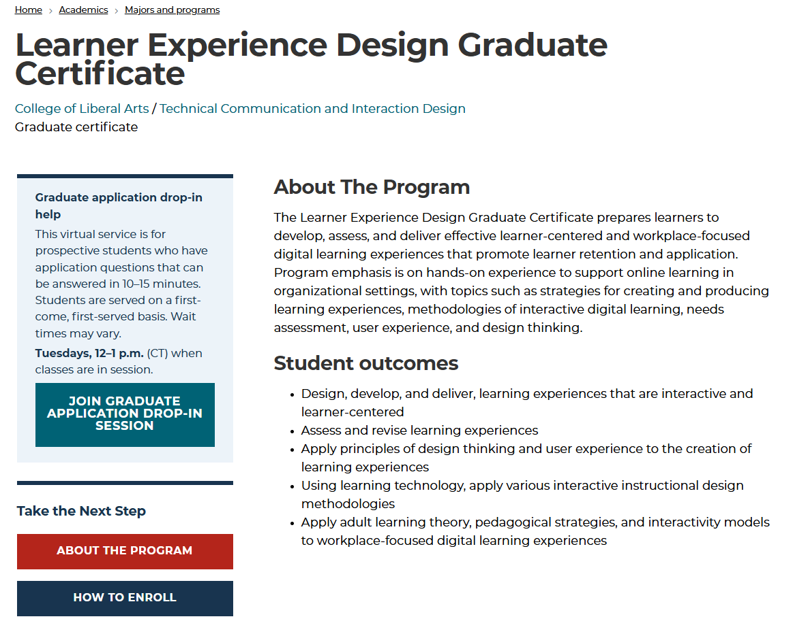
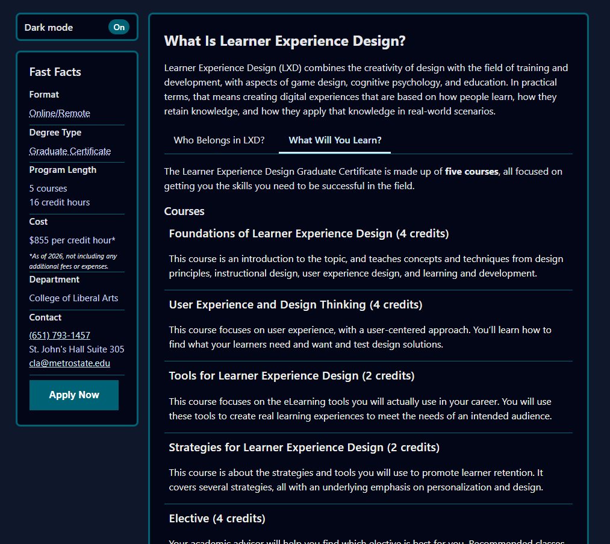

Project Overview
This section presents the completed project artifact. The version displayed here reflects a revised and professional outcome suitable for a real‑world audience.

Problem & Audience
This project addressed the problem of [describe problem]. The intended audience was [describe audience], who needed clearer organization and guidance in order to complete their tasks.
Prior to this project, users experienced confusion, delays, or dependence on outside help due to unclear structure.

Communication Approach
My communication approach prioritized clarity, predictability, and respect for the user’s time. Plain language, consistent labeling, and clear sequencing helped users orient themselves quickly.
The web medium encouraged short sections, scannable layouts, and visual hierarchy appropriate for reference use.

Design Principles in Practice
- Hierarchy: Headings and spacing guide attention.
- Proximity: Related items are grouped together.
- Cognitive Load: Content is chunked into manageable parts.
- Preattentive Processing: Contrast and layout highlight priorities.
The Final Design
The final design integrates usability principles, accessibility considerations, and user feedback into a cohesive solution.

Access & Inclusion
Accessibility considerations included readable contrast, clear navigation, descriptive text, and consistent structure for varied users and contexts.
User Insights
Interviews revealed that users struggled most with [key insight], directly shaping decisions around layout and labeling.
Revisions & Problem‑Solving
Revisions focused on simplifying navigation and clarifying terminology based on user feedback.
Tools & Process
- Figma
- HTML & CSS
- User interviews and content audits
Reflection
This project demonstrates my ability to design clear, accessible information systems. With more time, I would expand user testing and explore long‑term maintenance.